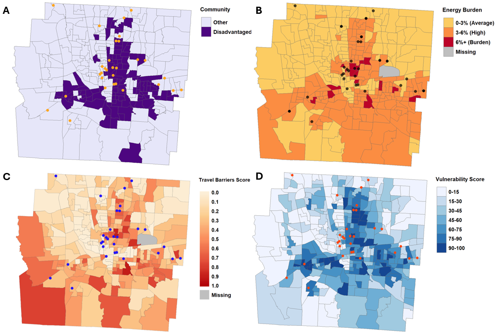

Abstract
Electric vehicle (EV) adoption rates are disproportionately lower in low-income and ethnically minority communities, which may perpetuate injustices when electrifying the transportation system. Existing justice frameworks take siloed views of justice considerations in the transition to EVs, with connections between transportation, energy, and climate justice having been understudied. We developed and applied the novel Just Transition to Electric Vehicles (JTEV) framework, integrating justice considerations in the above domains. We conducted semi-structured interviews in four languages with 45 residents of underserved neighborhoods of Columbus, Ohio (USA) to investigate how EV adoption intersects with energy poverty, transportation poverty, and climate and environmental injustices. The interviews reveal five main justice themes for transportation, energy, climate, environment, and EV adoption and sub-themes of solar equity gap (under the energy justice theme), and five EV adoption subthemes: barriers to EV adoption, affordable energy support, perceived health and air quality benefits, climate benefits, and economic benefits. We showed how intertwined disadvantages perpetuate or exacerbate distributive, recognition, restorative, and procedural injustices in the EV transition. These findings are important for addressing the vicious cycle of injustices that hinder the capabilities of disadvantaged communities when designing policies for a just EV transition.
